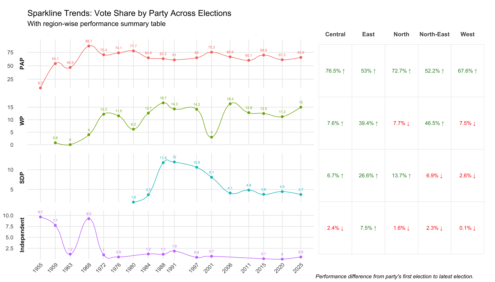

library(readr)
library(dplyr)
library(stringr)
library(janitor)
library(ggplot2)
library(ggalt)
library(patchwork)
library(ggtext)
library(purrr)
library(tidyr)
library(forcats)
options(warn = 1)Singapore Election Trends (1959-2025)
Load Libraries
Data Cleaning and Preparation
# Step 1: Read and clean the data
suppressWarnings(suppressMessages({
election_data <- read_csv("dataset/ParliamentaryGeneralElectionResultsbyCandidateUpdated_with_regions.csv") %>%
clean_names() %>%
mutate(
year = as.integer(year),
party = str_trim(party),
vote_count = as.integer(gsub(",", "", vote_count)),
party_clean = case_when(
str_detect(party, regex("PAP", ignore_case = TRUE)) ~ "PAP",
str_detect(party, regex("WP", ignore_case = TRUE)) ~ "WP",
str_detect(party, regex("SDP", ignore_case = TRUE)) ~ "SDP",
str_detect(tolower(party), "indp|independent") ~ "Independent",
TRUE ~ NA_character_
)
) %>%
filter(!is.na(vote_count), !is.na(year)) # Do not filter party_clean here, keep all parties for total votes
# Step 2: Calculate total votes for each year across all parties
total_votes_year <- election_data %>%
group_by(year) %>%
summarise(total_votes_all = sum(vote_count, na.rm = TRUE), .groups = "drop")
# Step 3: Aggregate votes by party_clean per year (only valid party_clean)
party_votes_year <- election_data %>%
filter(!is.na(party_clean)) %>% # Filter only known parties here
group_by(year, party_clean) %>%
summarise(party_votes = sum(vote_count, na.rm = TRUE), .groups = "drop")
# Step 4: Join total votes per year with party votes and calculate vote share
party_trend <- party_votes_year %>%
left_join(total_votes_year, by = "year") %>%
mutate(
vote_share = (party_votes / total_votes_all) * 100,
party_clean = factor(party_clean, levels = c("PAP", "WP", "SDP", "Independent"))
) %>%
arrange(year, party_clean)
# region
# Aggregate votes by region, year, and party_clean
region_party_votes <- election_data %>%
filter(!is.na(party_clean), !is.na(region)) %>%
group_by(region, year, party_clean) %>%
summarise(region_party_votes = sum(vote_count, na.rm = TRUE), .groups = "drop")
# Calculate total votes per region and year (all parties)
total_votes_region_year <- election_data %>%
filter(!is.na(region)) %>%
group_by(region, year) %>%
summarise(total_votes_region = sum(vote_count, na.rm = TRUE), .groups = "drop")
# Join and compute vote share by party in each region for each year
region_party_performance <- region_party_votes %>%
left_join(total_votes_region_year, by = c("region", "year")) %>%
mutate(vote_share_region = (region_party_votes / total_votes_region) * 100) %>%
arrange(region, party_clean, year)
region_party_trends <- region_party_performance %>%
group_by(region, party_clean) %>%
summarise(
first_year = min(year),
last_year = max(year),
first_vote_share = vote_share_region[year == first_year][1],
last_vote_share = vote_share_region[year == last_year][1],
.groups = "drop"
) %>%
mutate(
vote_share_diff = last_vote_share - first_vote_share,
performance_trend = case_when(
is.na(first_vote_share) | is.na(last_vote_share) ~ NA_character_,
vote_share_diff > 0 ~ "↑",
vote_share_diff < 0 ~ "↓",
TRUE ~ "→" # no change
),
first_vote_share = round(first_vote_share, 2),
last_vote_share = round(last_vote_share, 2),
vote_share_diff = round(vote_share_diff, 2)
)
# STEP A: Create styled labels for region table
region_table_long <- region_party_trends %>%
mutate(
label = case_when(
is.na(last_vote_share) ~ "",
performance_trend == "↑" ~ paste0("<span style='color:green;'>", round(last_vote_share, 1), "% ↑</span>"),
performance_trend == "↓" ~ paste0("<span style='color:red;'>", round(last_vote_share, 1), "% ↓</span>"),
performance_trend == "→" ~ paste0("<span style='color:gray;'>", round(last_vote_share, 1), "% →</span>"),
TRUE ~ ""
)
) %>%
select(party_clean, region, label) %>%
pivot_wider(names_from = region, values_from = label) %>%
pivot_longer(-party_clean, names_to = "region", values_to = "label") %>%
mutate(
region = factor(region, levels = sort(unique(region))), # Customize order if needed
party_clean = factor(party_clean, levels = c("PAP", "WP", "SDP", "Independent"))
)
}))
print(region_table_long, n = Inf)# A tibble: 20 × 3
party_clean region label
<fct> <fct> <chr>
1 Independent Central <span style='color:red;'>2.4% ↓</span>
2 Independent East <span style='color:green;'>7.5% ↑</span>
3 Independent North <span style='color:red;'>1.6% ↓</span>
4 Independent North-East <span style='color:red;'>2.3% ↓</span>
5 Independent West <span style='color:red;'>0.1% ↓</span>
6 PAP Central <span style='color:green;'>76.5% ↑</span>
7 PAP East <span style='color:green;'>53% ↑</span>
8 PAP North <span style='color:green;'>72.7% ↑</span>
9 PAP North-East <span style='color:green;'>52.2% ↑</span>
10 PAP West <span style='color:green;'>67.6% ↑</span>
11 SDP Central <span style='color:green;'>6.7% ↑</span>
12 SDP East <span style='color:green;'>26.6% ↑</span>
13 SDP North <span style='color:green;'>13.7% ↑</span>
14 SDP North-East <span style='color:red;'>6.9% ↓</span>
15 SDP West <span style='color:red;'>2.6% ↓</span>
16 WP Central <span style='color:green;'>7.6% ↑</span>
17 WP East <span style='color:green;'>39.4% ↑</span>
18 WP North <span style='color:red;'>7.7% ↓</span>
19 WP North-East <span style='color:green;'>46.5% ↑</span>
20 WP West <span style='color:red;'>7.5% ↓</span> Render Plots
# STEP B: Table plot using rich text formatting
suppressWarnings({
table_plot <- ggplot(region_table_long, aes(x = region, y = fct_rev(party_clean))) +
geom_tile(fill = "white", color = "grey70") + # Use default size, add fill for clarity
geom_richtext(
aes(label = label),
fill = NA, label.color = NA,
size = 3, hjust = 0.5, vjust = 0.6,
label.padding = unit(rep(0, 4), "pt"),
na.rm = TRUE
) +
scale_x_discrete(position = "top") +
theme_minimal(base_size = 12) +
theme(
axis.text.x = element_text(face = "bold", size = 11),
axis.text.y = element_blank(), # Hide y axis text as you did
panel.grid = element_blank(),
plot.caption = element_text(size = 10, hjust = 0, face = "italic", margin = margin(t = 0)),
plot.margin = margin(t = 0, r = 0, b = 0, l = 0),
axis.title = element_blank()
) +
labs(
caption = "Performance difference from party's first election to latest election."
)
# STEP C: Sparkline plot (same as before)
spark_plot <- ggplot(party_trend, aes(x = year, y = vote_share, group = party_clean, color = party_clean)) +
geom_xspline(size = 1, spline_shape = -0.6) +
geom_point(size = 2) +
geom_text(aes(label = round(vote_share, 1)), vjust = -1.5, size = 2.5, show.legend = FALSE) +
facet_wrap(~ party_clean, scales = "free_y", ncol = 1, strip.position = "left") +
scale_x_continuous(
breaks = unique(party_trend$year),
guide = guide_axis(check.overlap = TRUE)
) +
scale_y_continuous(expand = expansion(mult = c(0, 0.15))) +
coord_cartesian(clip = "off") +
theme_minimal(base_size = 12) +
theme(
strip.text = element_text(face = "bold"),
axis.title = element_blank(),
legend.position = "none",
panel.grid.minor = element_blank(),
plot.margin = margin(t = 0, r = 0, b = 0, l = 0),
panel.spacing = unit(1, "lines"),
axis.text.x = element_text(angle = 45, hjust = 1)
) +
labs(
title = "Sparkline Trends: Vote Share by Party Across Elections",
subtitle = "With region-wise performance summary table"
)
# STEP D: Combine sparkline and table with good width ratio
combined_plot <- spark_plot + table_plot + plot_layout(widths = c(1.75, 1))
# Render combined plot
print(combined_plot)
})